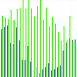
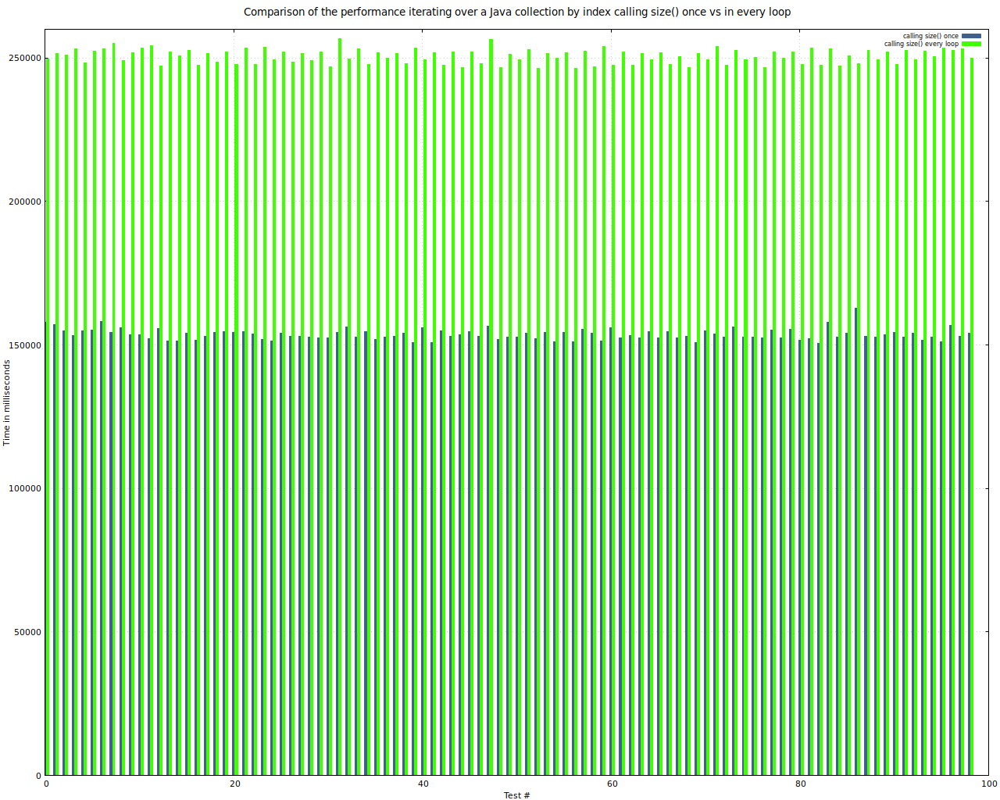
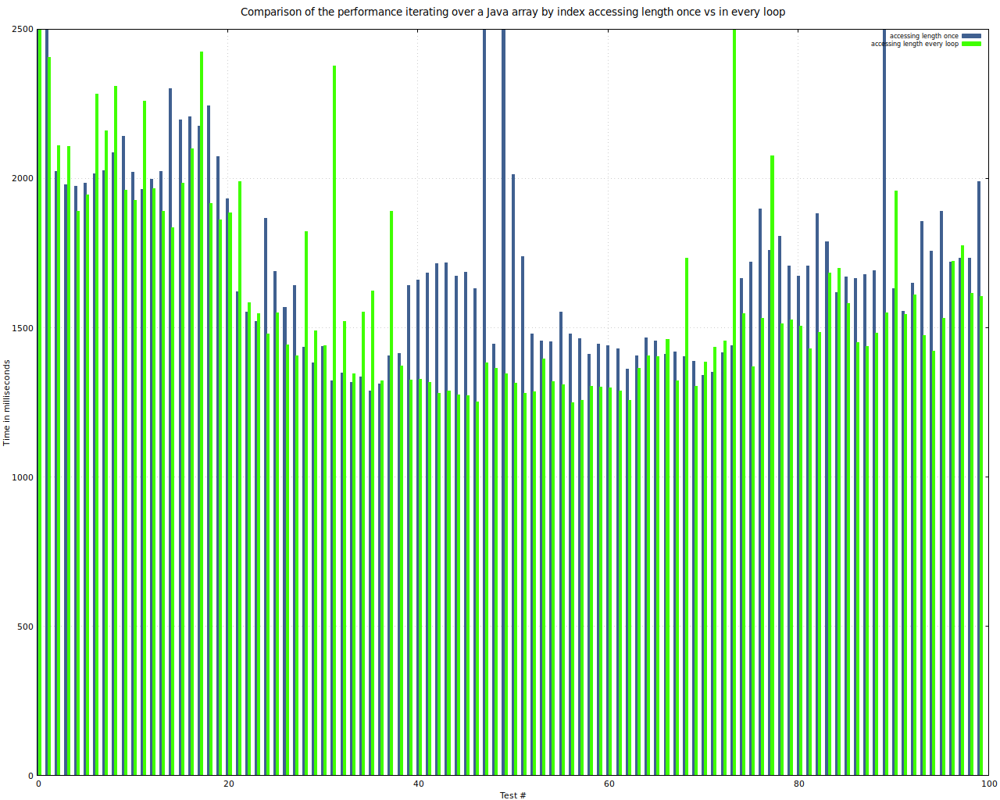
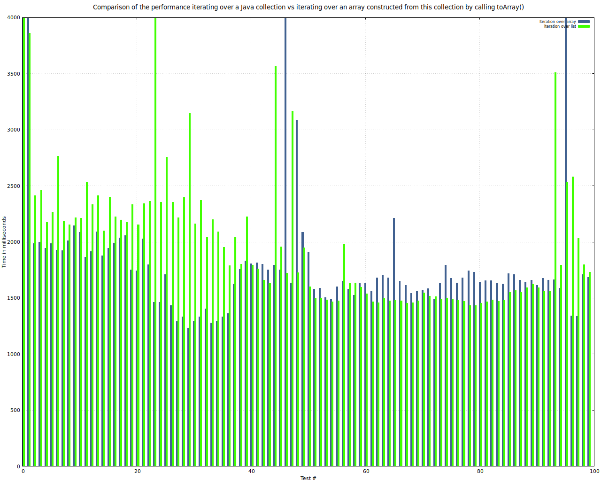

Seiteneffekt-freie Programmiersprachen

Ich habe mich hier verschiedentlich darüber ausgelassen, was Syntactic sugar in Java bedeutet und was man beachten sollte, um mit einigen einfachen Mitteln die Performanz von Java-Anwendungen zu steigern.
Ich werfe gern anderen Leuten vor, dass wenn man nur über einen Hammer verfügt, jedes Problem aussieht wie ein Nagel. Ich bin davon nicht frei - das ist auch der Grund, warum ich Seiteneffektfreiheit an Java erkläre - das ist eine Sprache, der man diese Eigenschaft auch nicht mit Zukneifen sämtlicher Körperöffnungen ehrlicherweise unterstellen kann.
Aber es ist immer wieder schön, wenn man auch schlechte Beispiele einfach erstellen und demonstrieren kann - und hier kann Java in diesem Fall glänzen. Ich hatte in einem früheren Artikel bereits beschrieben unf gezeigt, warum man aus Laufzeitsicht nicht mit einem Index über eine Liste iterieren sollte, sondern immer mittels eines Iterators.
Ist man aber doch gezwungen, mit einem Index zu arbeiten, sieht das oft so soder so ähnlich aus:
for(int i=0;i<l.size();++i)
Das ist schlecht, da der Compiler den Aufruf von l.size nicht automatisch herauszieht und einer lokalen Variablen zuweist - auch die VM tut das nicht während der Ausführung - weil dioe Methode size alles mögliche andere machen kann, als nur die Länge der Listenimplementierung zurückzuliefern: Der Compiler kann nicht in der Lage sein, zu verstehen und zu analysieren, ob der Aufruf dieser Methode in jedem Schleifendurchlauf immer denselben Wert zurückgibt - und selbst wenn: Diese Methode mag noch ganz andere Effekte - eben Seiteneffekte haben, auf die der Programmierer zählt. Das heißt, dass bei einer Liste der Länge 50 im Verhalten des Programmes ein Unterschied besteht - abhängig davon ob die Methode size() einmal oder 50 mal aufgerufen wird.
Ist der Entwickler sich sicher, dass die Methode während der Iteration keine Seiteneffekte hat und sich das Ergebnis nicht ändert, kann er von Hand folgendes alternative Konstrukt benutzen:
int howmany=l.size(); for(int i=0;i<howmany;++i)
Die Frage ist - Sollte er es tun? Damit wird der code länger und unübersichtlicher. Wiegen das die Vorteile auf? Zur Beantwortung dieser Frage habe ich einige Benchmarks erstellt - einen, der beide Ansätze auf Listen vergleicht und einen, der beide Ansätze für Arrays vergleicht - es könnte ja sein, dass der Java-Compiler length als Member eines Arrays anders behandelt und in eine lokale Variable herauszieht. Zunächst die Ergebnisse des Benchmarks mit Listen:

Vergleich der Abarbeitungszeit beim Iterieren über eine Liste mit einem Aufruf der Methode size() vor der Schleife und einem Aufruf der Methode in jedem SchleifendurchlaufDas Ergabnis ist recht deutlich - wenn auch der Unterschied von der jeweiligen Implementierung abhängen dürfte - es ist nicht ausgeschlossen, dass es Implementierungen gibt, bei denen size eine Komplexität von O(1) hat. Aber auch da ist es so, dass der Aufruf jedesmal geschieht und damit Performanz-Einbußen einhergehen.
Ich habe in Intellij sofort nach den Performanzfressern gesucht und sie ersetzt - Das Suchmuster dafür war:
([ \\t]*?)(for\s*?\(.*?;.*?<\s*?)(.*?\.size\(\))(\s*?;.*)
Das Ersetzungsmuster war:
$1int howmany=$3;\n$1$2howmany$4
Ich musste danach nur an wenigen Stellen manuell nacharbeiten - und meine CI/CD Pipeline im Gitlab hat mir bestätigt, dass meine Änderungen korrekt waren...
Wie schlägt sich nun das Iterieren über ein Array in dieser Beziehung? Sehen wirs uns an...

Vergleich der Abarbeitungszeit beim Iterieren über ein Array mit einem Zugriff auf length for der Schleife und einem Zugriff auf length in jedem SchleifendurchlaufEinigermaßen überraschend ist der Zugriff auf das Member length in jedem Schleifendurchlauf tatsächlich schneller als der einmalige Zugriff zur Speicherung in einer lokalen Variable und die Arbeit mit dieser Variable in jedem Durchlauf. Die Ursache dafür liegt höchstwahrscheinlich im kürzeren Bytecode zum Zugriff auf ein Member verglichen mit dem Zugriff auf eine lokale Variable.
Damit lag ich falsch: der Bytecode für die Variante mit expliziter Variable ist sogar kürzer
24: iload 5
26: iload_3
27: if_icmpge 45
30: aload_2
31: aload_1
32: iload 5
34: aaload
35: invokevirtual #41 // Method java/lang/StringBuffer.append:(Ljava/lang/String;)Ljava/lang/StringBuffer;
38: pop
39: iinc 5, 1
42: goto 24
als der für den direkten Zugriff auf length in jedem Durchlauf (der Wert von length wird durch den Compiler selbsttätig in eine lokale Variable ausgelagert)
28: iload 6
30: iload 5
32: if_icmpge 55
35: aload 4
37: iload 6
39: aaload
40: astore 7
42: aload_2
43: aload 7
45: invokevirtual #41 // Method java/lang/StringBuffer.append:(Ljava/lang/String;)Ljava/lang/StringBuffer;
48: pop
49: iinc 6, 1
52: goto 28
Neugierig war ich als mir folgender Gedanke kam - wie schlägt sich eigentlich die Performanz beim Iterieren mittels foreach wenn man einmal über die Liste iteriert und einmal über ein mittels toArray(T[]) aus der Liste erzeugtes Array? Das muste natürlich ebenfalls getestet werden:

Vergleich der Abarbeitungszeit beim Iterieren über ein Collection mittels foreach und beim Iterieren über ein aus der Liste mittels toArray erzeugten Arrays - ebenfalls mittels foreachHier lässt sich keine definitive Empfehlung pro oder contra ablesen - die ersten Wiederholungen sind interesant: Dort wirkt es, als ob die Konvertierung in ein Array deutliche Vorteile mit sich brächte. Vielleicht hängt das an dieser Stelle damit zusammen, dass der Jit noch nicht gegriffen hat. Später sieht es so aus, wie ich es intuitiv vermutet hätte: die Umwandlung in ein Array ist so kostspielig, dass sie eventuelle Vorteile wieder auffrist.


Vor 5 Jahren hier im Blog
-
Beliebige Spezifikationen für dWb-Module mit variabler Anzahl von Slots
01.05.2016
Die Anwendung dWb+ wurde erweitert für den Umgang mit beliebigen Komponenten-Spezifikationen. Es soll versucht werden, diese Arbeit weiterzuführen, indem die Modulbeschreibungen so erweitert werden, dass eine variable Anzahl von Eingängen möglich wird.
Weiterlesen...
Tags
Android Basteln C und C++ Chaos Datenbanken Docker dWb+ ESP Wifi Garten Geo Git(lab|hub) Go GUI Hardware Java Jupyter Komponenten Links Linux Markup Music Numerik PKI-X.509-CA Python QBrowser Rants Raspi Revisited Security Software-Test sQLshell TeleGrafana Verschiedenes Video Virtualisierung Windows Upcoming...
Neueste Artikel
-
 Algorithmen Linkdump 2021 I
Algorithmen Linkdump 2021 I
Ein Linkdump rund um Algorithmen und Programmierung
Weiterlesen... -
Raspi Linkdump 2021 I
Ein Linkdump rund um den Raspi
Weiterlesen... -
Entgoogle das Intenet!
Ich habe eine weitere interessante Ressource als Ausgangspunkt für ein offeneres, unabhängigeres und freieres Internet ohne Datenkraken gefunden
Weiterlesen...
Manche nennen es Blog, manche Web-Seite - ich schreibe hier hin und wieder über meine Erlebnisse, Rückschläge und Erleuchtungen bei meinen Hobbies.
Wer daran teilhaben und eventuell sogar davon profitieren möchte, muß damit leben, daß ich hin und wieder kleine Ausflüge in Bereiche mache, die nichts mit IT, Administration oder Softwareentwicklung zu tun haben.
Ich wünsche allen Lesern viel Spaß und hin und wieder einen kleinen AHA!-Effekt...
PS: Meine öffentlichen GitHub-Repositories findet man hier.